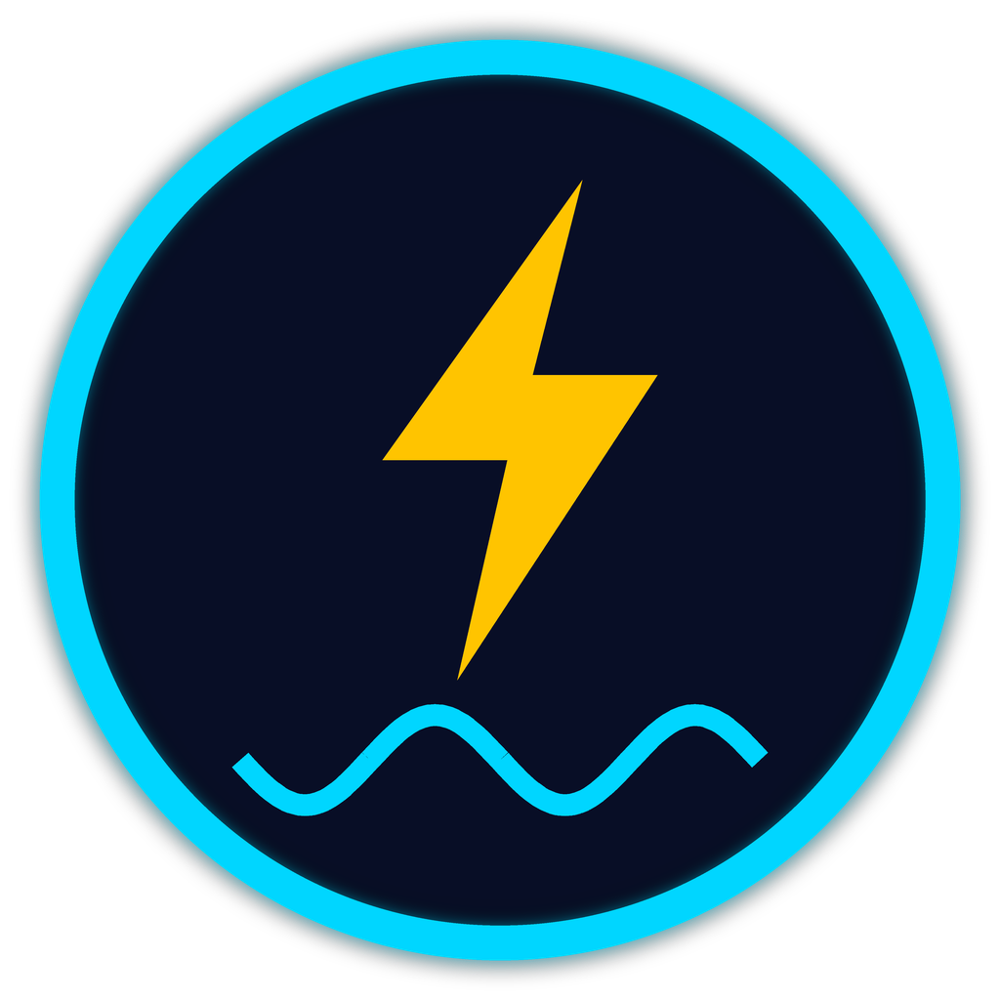

Datenschutzerklärung
Stand: 13.10.26
1. Verantwortlicher
Sebastian Käwel, Am Fischergraben 27, 44628 Herne, Deutschland. E-Mail: alexakawel51@gmail.com. Weitere Angaben im Impressum.
2. Worum es geht
WattWissen veröffentlicht Lerninhalte zur Elektrotechnik auf Instagram (@wattwissen51) und TikTok. Die Veröffentlichung läuft über ein persönliches Werkzeug des Betreibers. Es ist nicht für andere Nutzer gedacht. Diese Erklärung gilt für diese Website, das Werkzeug und das Quiz auf Instagram.
3. Aufruf dieser Website (GitHub Pages)
Diese Seiten werden bei GitHub Pages gehostet (GitHub Inc., USA). Beim Aufruf verarbeitet GitHub technisch notwendige Daten wie IP-Adresse, Datum, Uhrzeit und Browserangaben in Server-Logdateien. Ich selbst erhalte darauf keinen Zugriff und setze weder Cookies noch Tracking oder Analysewerkzeuge ein. Rechtsgrundlage ist Art. 6 Abs. 1 lit. f DSGVO (sicherer und stabiler Betrieb der Seite). Für Übermittlungen in die USA beruft sich GitHub auf das EU-US Data Privacy Framework bzw. Standardvertragsklauseln.
4. Zugangsdaten für TikTok und Instagram
Das Werkzeug verarbeitet nur die Zugangsdaten (OAuth-Tokens) und den öffentlichen Benutzernamen der eigenen Konten des Betreibers. Die Tokens liegen verschlüsselt geschützt auf dem eigenen Server des Betreibers, werden nicht weitergegeben und nur zum Veröffentlichen eigener Beiträge verwendet. Der Zugriff kann jederzeit in den Einstellungen von TikTok bzw. Instagram widerrufen werden.
5. Quiz auf Instagram (Kommentare)
Daten: Wenn du an einem Quiz teilnimmst, lese ich deinen öffentlichen Instagram-Kontonamen, den Text deines Kommentars (die gewählte Antwort A, B, C oder D) und den Zeitpunkt. Dein Kommentar wird automatisch ausgeblendet, damit andere ihn nicht sehen. Aus den Antworten errechne ich Punkte, und deinen Kontonamen nenne ich in der Bestenliste im Beitrag am Sonntag. Der Gesamtstand (Kontoname, Punkte, Anzahl richtiger Antworten, Anzahl Wochen) wird für die laufende Wertung gespeichert.
Rechtsgrundlage: deine Einwilligung durch die Teilnahme (Art. 6 Abs. 1 lit. a DSGVO). Die Teilnahme ist freiwillig, kostenlos und ab 16 Jahren möglich.
Speicherdauer und Löschung: Die Daten bleiben gespeichert, solange das Quiz läuft oder bis du widerrufst. Du kannst jederzeit ohne Angabe von Gründen widerrufen, indem du mir eine Direktnachricht auf Instagram (@wattwissen51) oder eine E-Mail schreibst. Dann lösche ich deine Daten und nehme dich aus künftigen Wertungen heraus. Bereits veröffentlichte Beiträge mit der Bestenliste ändere ich auf Wunsch.
Empfänger: Die Bestenliste ist öffentlich sichtbar. Die Kommentartexte werden nicht an Dritte oder an KI-Dienste weitergegeben. Instagram selbst verarbeitet deine Kommentare nach eigenen Datenschutzbestimmungen (Meta Platforms Ireland Ltd.).
6. Eingesetzte Dienstleister
- Meta / Instagram: Veröffentlichung der Beiträge und Zugriff auf Kommentare über die offizielle Instagram-API.
- TikTok: Veröffentlichung der Videos über die Content Posting API.
- Anthropic (USA): KI-Erzeugung von Texten und Quizfragen. Es werden keine personenbezogenen Daten von Teilnehmern oder Besuchern übermittelt.
- Cloudinary: vorübergehende Bereitstellung der Bild- und Videodateien für Instagram. Die Dateien enthalten keine personenbezogenen Daten Dritter.
- GitHub: Hosting dieser Website.
7. Deine Rechte
Du hast das Recht auf Auskunft (Art. 15 DSGVO), Berichtigung (Art. 16), Löschung (Art. 17), Einschränkung der Verarbeitung (Art. 18), Datenübertragbarkeit (Art. 20) und Widerspruch (Art. 21). Eine erteilte Einwilligung kannst du jederzeit mit Wirkung für die Zukunft widerrufen (Art. 7 Abs. 3). Außerdem kannst du dich bei einer Datenschutzaufsichtsbehörde beschweren, zum Beispiel der Landesdatenschutzbehörde deines Bundeslandes.
8. Kontakt zum Datenschutz
alexakawel51@gmail.com oder per Instagram-Direktnachricht an @wattwissen51.
Privacy Policy (summary)
Last updated: 13.10.26. Controller: Sebastian Käwel, alexakawel51@gmail.com. See the Impressum for the full address.
What data is processed
- Operator's own accounts: OAuth access/refresh tokens and the public username of the operator's own TikTok and Instagram accounts. Tokens are stored only in a protected configuration file on the operator's own server and are used only to publish the operator's own content. Access can be revoked at any time in the TikTok or Instagram settings.
- Instagram quiz participants: public Instagram username, comment text (the chosen answer) and timestamp, only if you take part voluntarily in the weekly quiz. Legal basis: consent (Art. 6(1)(a) GDPR). The username appears in the public leaderboard. Withdraw at any time via direct message to @wattwissen51 or e-mail; data is then deleted.
- Website visits: hosted on GitHub Pages; GitHub processes server logs (e.g. IP address). No cookies, no tracking, no analytics.
Service providers
Meta/Instagram, TikTok, Anthropic (AI text generation, no personal data of participants), Cloudinary (temporary media hosting), GitHub (website hosting).
Your rights
Access, rectification, erasure, restriction, portability, objection and the right to lodge a complaint with a supervisory authority. Contact: alexakawel51@gmail.com.
WattWissen is an independent project and is not affiliated with, endorsed by or sponsored by TikTok, Instagram or Meta.